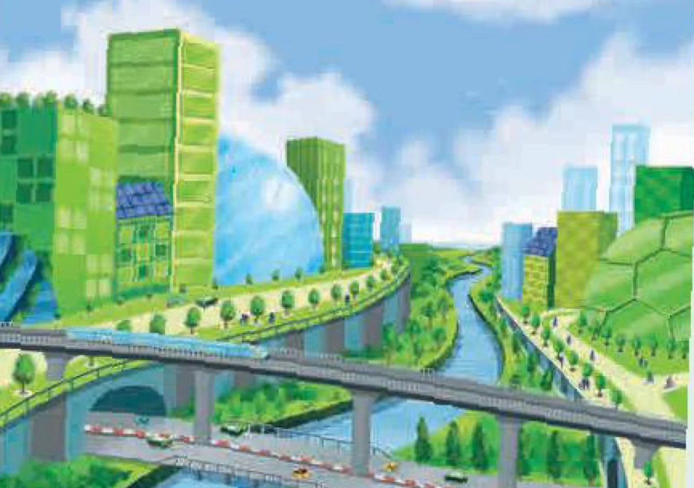

Language
Lesson 2 — Linking · City words · Verbs
3Five stops in 45 minutes
- 🧩
Picture puzzle
Warm-up
5 min - 🔗
Pronunciation
Linking sounds
12 min - 🏙️
Vocabulary
Smart living
12 min - ✍️
Grammar
Stative & linking verbs
13 min - ✅
Wrap-up
Exit ticket
3 min
Warm-up
Put the pieces together
5 minutesPut the pieces together!
- 🧩
Build
Click two pieces to swap them.
- ⏱️
Race
The fastest group wins.
- 🏷️
Name it
Give the picture a good name.
Paper version: print the picture, cut it into 12 pieces, one set per group.
What is special about this city?

Name it! A green city · A city of the future · Smart and green
I can see … · The buildings look … · It seems …
Pronunciation
Linking final consonants to initial vowels
12 minutesWe don’t pause between most words
We link the end of one word to the beginning of the next, so they flow together smoothly.
consonant sound + vowel sound → lives‿in · west‿of · walk‿across
Think of it like this: “He live-sin the city.”
Say it fast, say it smooth
Fill‿a cup,
Drink‿it‿up.
Wait‿a while,
Walk‿a mile.
Meet‿at‿eight,
Don’t be late!
Linking in sentences
1. He lives‿in the city centre.
2. Cities‿of the future will be more‿exciting.
3. The new high-rise building is‿in the west‿of the city.
4. A lot‿of people come to the city to walk‿across the famous bridge.
Then practise saying the sentences
1. Traffic jams are the city’s biggest problem, especially during rush hour. jams‿are · rush‿hour
2. This is the most beautiful city I’ve ever visited. This‿is · I’ve‿ever
Then practise saying the sentences
3. Would you like a guided tour of the city this afternoon? like‿a · tour‿of · this‿afternoon
4. The Fine Art Museum was built in the new urban area last year. Fine‿Art · built‿in · urban‿area
Pairs: read the four sentences to each other. Smooth, no pauses!
Vocabulary
Cities and smart living
12 minutesMeanings a–e
a. a garden built on the top of a building
b. a very tall, modern building, usually in a city
c. a person who lives in the city
d. basic systems such as transport, banks, etc. needed for a city, country or organisation to run smoothly
e. an area in a city where a large number of people live
Words 1–5
1. city dweller (np) /ˈsɪti ˌdwelə(r)/ c
2. infrastructure (n) /ˈɪnfrəstrʌktʃə(r)/ d
3. urban centre (np) /ˈɜːbən ˌsentə(r)/ e
4. roof garden (n) /ˈruːf ˌɡɑːdn/ a
5. skyscraper (n) /ˈskaɪskreɪpə(r)/ b
Use the context clues
1. Building a good ______ is important for the country’s economy. infrastructure
2. The new underground has allowed ______ to get around more easily. city dwellers
3. With the help of technology, people can now grow vegetables in ______ of high-rise buildings. roof gardens
Use the context clues
4. The ______ attracts people’s attention because of its unusual architecture. skyscraper
5. More people are moving away from the ______ of large cities to the suburbs. urban centres
Team challenge · 3 minutes
Write new sentences with the five words. One point for each correct sentence!
Grammar
Stative verbs in the continuous form · linking verbs
13 minutesStative verbs describe a state, not an action
- 💭
Thoughts
agree · believe · remember · think · understand
- ❤️
Feelings
hate · love · prefer
- 👀
Senses
appear · feel · hear · look · see · seem · smell · taste
- 🔑
Possession
belong · have · own
Usually simple — but continuous for an action
State → simple
My dad has a new car. (owns)
I think smart cities are a good idea. (opinion)
I see what you mean. (understand)
Action → continuous
He is having a good time. (enjoying)
We are thinking of moving. (considering)
The mayor is seeing the planners today. (meeting)
Opinion, state or action?
1. I think / am thinking that living in the city is good for young people. think — an opinion
2. We are thinking / think of moving out of the city. are thinking — = considering
3. I don’t see / am not seeing the building. It’s too far away. don’t see — a sense
Simple or continuous?
1. City planners think / are thinking about creating more car-free zones. are thinking
2. Our city has / is having several smart traffic systems. has
3. We have / are having a discussion about future transport at the moment. are having
4. This apartment belongs / is belonging to my grandparents. belongs
Subject + linking verb + adjective / noun
be · seem · look · become · appear · sound · taste · smell
My mum looks very tired. · We became friends.
Action verb + adverb
The electric car runs quietly.
Linking verb + adjective
The electric car sounds quiet.
One mistake in each sentence
1. The urban lifestyle seems more excitingly to young people. excitingly → exciting
2. The museum looks beauty from a distance. beauty → beautiful
3. Widening the road sounds a good solve to traffic problems in the area. solve → solution
Choose the correct word
1. The new eco-friendly neighbourhood looks beautiful / beautifully. beautiful
2. Electric buses move very quiet / quietly through the city. quietly
3. The air in a city with more green spaces feels fresh / freshly. fresh
4. The streets seem safe / safely at night because of smart lighting. safe
Use stative verbs and linking verbs
What is changing near you?
- a new road
- more green spaces
- walking and cycle paths
- a new shopping centre
- a metro line
- roof gardens
… is / are thinking of … · It will look / seem / become … · That sounds …
Exit ticket: one sentence with a linking verb about your city
- 🔗
link consonants to vowels
- 🏙️
words about cities and smart living
- ✍️
stative verbs + linking verbs
Homework
1. Do the Language exercises in the workbook.
2. Write 3 sentences about your neighbourhood with look, seem, become.
3. Get ready for Lesson 3 — Reading.